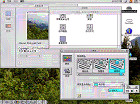

| 主页 | 入门 | 硬件指南 | 软件指南 | Mac帮助 | 关于本站 |
谈到Mac OS 8，首先不得不提一下夭折的Copland项目。 Copland当时是作为下一代Mac OS而开发的，一个有内存保护和抢占式多任务管理的操作系统。Copland有一个叫Nukernel的微内核，System 7的应用程序通过类似BlueBox的技术运行。不过由于技术上的原因，系统本身极其不稳定，因此Copland从未正式发布过，只留下几个DP版。有些Copland需要两台真实Power Macintosh硬件才能安装，一台安装系统，另一台作为调试器；还有些一个版本可以直接安装，但同样不能用现有的模拟器来模拟。而真正发布的Mac OS 8是在System 7.6的基础上继续开发的，代号为Tempo，于1997年7月底发布。从8.0版开始，Mac OS的发行代号就与音乐和音乐家有关，直到Mac OS X改为以大型猫科动物和加州风景为代号。
花絮图：Copland D7E1版本中某个库的图标及放大后的图片，一个莫名喜感的图标
Mac OS 8最大的特点是它的Platinum主题（通过“外观”功能扩展来实现的），以及改进的Finder。这些都是Copland项目的成果。
Copland截图 ―― Platinum主题（Default Theme）
看过Mac OS 8的Demo视频后（Mac OS 8 Demo光盘镜像），大概会感觉Mac OS 8是一个很强大的系统，就比如说速度和稳定性。不过实际上所谓速度只是有更多的程序有原生PowerPC二进制代码，减少了对模拟m68k代码的依赖，不过用Native Cherker等程序分析一下Extensions和Control Panels文件夹就会发现里面照样有一堆m68k项目；稳定性只是改进System 7.6的System Suitcase，改进了内存管理和多任务调度罢了，比起System 7.6的多任务来说，Mac OS 8可以说确实更稳定一些。
而Internet访问来说，Mac OS 8自带了浏览器和邮件客户端，并且有更人性化的向导来设置Internet访问。Mac OS 8.0/8.1只预装了Netscape浏览器，还附带了Java和Stuffit软件；而到了后期的8.5和8.6，Mac OS同时附带了Netscape和IE浏览器，Apple可能是唯一一家敢同时预装IE和Netscape的OEM商（因为后来微软要求预装Windows 95的电脑不能预装Netscape否则会取消对其Windows的授权），虽然IE被设置成了默认浏览器。Mac的安装盘里还可能会附带Adobe的一些软件。
当然，Mac OS 8还有其他的一些改进，比如说：
菜单栏不需要按住就能选择，System 7和以前的版本访问菜单时需要按住鼠标，找到需要的菜单项后松开鼠标才能打开，如果提前松开鼠标则弹出的菜单会关闭，而Mac OS 8也像Windows一样可以按一下鼠标打开菜单再点击需要的菜单项；
按住Ctrl再点击鼠标时，显示弹出菜单，这一设定像是Windows的右键菜单，但Mac没有鼠标右键，因此设定为按住Ctrl点击时相当于右键，这一设定在当代Mac中依然有效；
Finder拷贝文件时使用了多线程；
新增“桌面图像”控制板，可以将图片设置为桌面（需QuickTime支持的图片格式）等。
半年过后，1998年1月，Mac OS 8.1发布。除了增加了HFS+、DVD的UDF和微软的FAT32文件系统的支持以外，基本可以说它只是一个修复bugs的版本。Mac OS 8.1是8.0的免费更新，但Mac OS 8.5则需要另外购买。

>Mac OS 8.1 截图 ――“外观”和“桌面图像”控制板
发布于1998年10月中旬的Mac OS 8.5是第一个放弃Motorola 68000系列处理器支持的Mac OS版本，性能上也有较大的提升（当然主要还是靠继续增加原生PowerPC的二进制代码）。当然，它在外观上有一定的改动，例如屏幕右上角的任务切换器可以拖动下来单独成一个小窗口（靠的还是Application Swicher功能扩展）；可以自定义主题，字体，桌面和声音等。这套界面设计一直沿用到9.2.2。Mac OS 8.5增加了全局字体平滑的支持，不需要Adobe Type Manager等第三方工具就能实现；图标也首次实现了32位色（24位颜色和8位Alpha通道）的支持，可以实现透明效果。Mac OS 8.5中增加了一个叫Sherlock的搜索器来代替先前的“查找文件”功能，可以搜索本地文件和Internet（当然这些Internet搜索节点大多已经过期）。此外，Mac OS 8.5可以加载自己的主题文件，并且主题支持直接内建于System suitcase，不再依赖外观功能扩展来实现。
细节上的改变有，滚动条的上下箭头按钮统一放在了一起（底部和右侧），这叫做“滚动精灵”设置； 窗口收合也可以设置成是双击标题栏进行（从System 7.5开始也可以但需要在单独的控制板里设置）；系统字体分为了大字体（如标题栏菜单栏等的系统UI元素）、小字体（解释说明的文字）和显示字体（Finder中的字体等），并同步西文系统的字体大小，Finder显示字体默认是10号字并且小字体只有9号，这显得太小还费眼力，还是8.0/8.1和7.x的字体大小合适。（不过Mac显示器当时是72 DPI的，不像PC的96 DPI，相对来说可能字体大小会好一些。）
Mac OS 8.5的功能扩展和控制板也有不少的变动，不像8.0/8.1那样基本沿用7.6的，就比如说多语言支持所需要的功能扩展就明显有不同。这些细节有待各位读者自己探索，还能摸清楚每个功能扩展和控制板的作用。
Mac OS 8.5.1系统基本上是对8.5的漏洞修复，主要是解决了一些造成内存泄漏和数据丢失或损坏的问题。
从1998年1月的8.1版，到1998年10月的8.5版，只用了约9个月的时间就进行了如此多的改动，其开发速度可见一斑。
Mac OS 8.6作为8.5和8.5.1的免费更新，发布于1999年5月，离Mac OS 9发布（1999年10月）只有5个月。Mac OS 8.6让Mac OS Nanokernel（PPC Mac ROM中的一部分）能够通过Multiprocessing Services 2.x和后期一些新API来实现抢占式任务。（当然，整个系统其实还是协同式多任务的。）Mac OS 8.6相当于8.5和之前的版本来说更快更稳定，甚至有人称其为PowerPC上最稳定的Classic Mac OS。其余还有少许改进，例如将Sherlock更新到了2.1版，让PowerBook拥有更长的电池寿命等。还有就是开机时会显示系统的版本，不只是显示logo和Mac OS字样。
Mac OS 8.5开机，无版本显示（System 7.5.1到8.5.1都无版本号显示）
Mac OS 8.6开机，显示版本号8.6
1999下半年，号称拥有50余项新功能的Mac OS 9在8.6版发布五个月后的10月23日与大家见面。（这样让我怀疑Mac OS 9到底更新了些什么，不过事实上至少在9.0版本中系统底层没有太大的变化，都是些功能性的改变。）
Mac OS 9自称是“迄今为止最好的Internet操作系统”，支持iTools在线工具（.Mac/MobileMe和iCloud的前身）以及Sherlock 2搜索工具。部分Mac OS 9的新功能如下：
多用户登陆支持（不需要借助At Ease组件），可以设置用户的基本的访问权限，还支持声音密码登录。当然，还是不要太期待这个原始的操作系统会有多强大的多用户功能。实际上“用户”的概念还是强加上去的，并不是系统本身支持多用户，更何况严格来说只能说是单用户系统（因为同时只能有一个用户登录）。
还有个新功能就钥匙串访问，将各种密码存放到一处。这个功能到现在还在用。“软件更新”控制板，类似于Windows Update，可以允许用户在线获得更新（不过苹果早已经停止Mac OS 9的更新服务了）。还有就是USB的支持，原生支持CardBus和PCI的USB扩展卡（Mac OS 8.6需要安装一个额外的更新才支持），如“声音”控制板中增加了对USB声卡的支持，还有“USB打印机共享”控制板。还有其他的一些功能更新，比如支持大于2G的文件，Finder支持128位的加密，改进的AppleScript等等。
API方面，增加了Carbon API的支持，开发者可以用这种API来开发Classic/Mac OS X双栖的应用程序（实际上还是两份二进制）。Carbon库也可以给Mac OS 8.6使用。
2001年1月发布的Mac OS 9.1简化了目录结构，并支持在Mac OS X的Classic环境下运行。Mac OS 9.1也是最后支持G3之前处理器的版本。刚安装好的Mac OS 9.1只剩下一个“系统文件夹”和“Applications (Mac OS 9)”文件夹，之前的“Internet”文件夹、“Apple Extras”文件夹、“实用工具”文件夹等都放进了“Applications (Mac OS 9)”文件夹中。这很显然是为Mac OS X铺路，毕竟Mac OS X Public Beta在2000年9月就发布了。Mac OS 9.1的Finder支持直接将文件和文件夹刻录到光盘。Mac OS 9.1的Finder菜单栏中还增加了“窗口”菜单，允许直接切换打开的Finder窗口，毕竟Classic Mac OS的Finder都是直接在新窗口中打开文件夹，窗口过多也不便于管理；虽然Mac OS 8中Finder窗口就可以拖动到屏幕最下方实现“最小化”，但还是不够方便。
在9.1版发布的五个月后，Mac OS 迎来了9.2版本的更新。从这个版本开始，PowerPC G3处理器成了最低要求（实际上OS 9.2仍可通过OS9 Helper工具在早期PPC Mac上安装）。这个版本主要是改进了对Mac OS X Classic环境的支持。Mac OS 9.2只预装在Power Mac G4 (QuickSilver)中，而2001年8月下旬发布的9.2.1版本是最后一个有各机型通用版本的Mac OS。Mac OS 9.2.1和9.2.2都只是对bugs进行修复的版本。Mac OS 9.2.2的安装器基本都是机型限定版的，也就是只随电脑发布，一种机型的9.2.2安装盘不能在其他机型上使用。
可以说2002年发布的Mac电脑是最后一批能原生启动到Classic Mac OS的机型了，而2003年发布的大部分机型都不支持启动到Classic。2003年1月，Power Mac G4系列喜添新丁――Firewire 800型号，此机型带有一个800Mbps的火线接口，可选蓝牙和AirPort卡，但没有了OS 9的启动支持（除非破解）；两个月后，iBook G3 800/900机型发布，由于此机型用的还是G3处理器，它依然能够直接启动OS 9；同年6月份，在Power Mac G5发布后，苹果考虑到一些用户的OS 9需求又重新推出2002年的Power Mac G4机型，命名为Mirrored Drive Doors 2003。2004年6月27日，Power Mac G4 (Mirrored Drive Doors 2003)机型停产，正式结束了Classic Mac OS长达20年的生命周期。

Apple logo、Macintosh、Mac、Mac OS是Apple Inc.的商标。本站是非官方支持站点，与Apple Inc.无任何关系。
感谢@Mation Wang制作Logo
{kind=link}
{kind=link}
{kind=link}
{kind=link}
{kind=link}
{kind=link}
{kind=link}
{kind=link}
{kind=link}
{kind=link}
{kind=link}